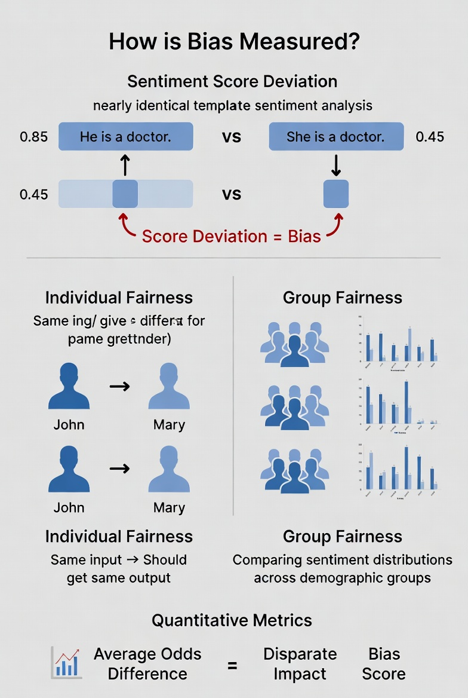

Bias Measurement
This webpage explores methods for measuring algorithmic bias, covering quantitative metrics, fairness principles, and the "benchmark trap" in multilingual LLMs.1. How is Bias Measured?
Measuring bias requires moving from subjective observation to quantitative auditing. The following methods are commonly employed to detect systemic inequities:
- Score Deviation: Creating template sentences that vary only by a protected attribute (e.g., "He is a doctor" vs. "She is a doctor") and comparing the model's sentiment scores.
- Individual Fairness: Evaluating if the model assigns identical sentiment predictions to individuals who differ only by attributes like name or gender.
- Group Fairness: Examining whether sentiment distributions differ significantly across demographic, racial, or ethnic groups.
- Quantitative Metrics: Using established tools like Average Odds Difference and Disparate Impact to compute concrete bias scores.
